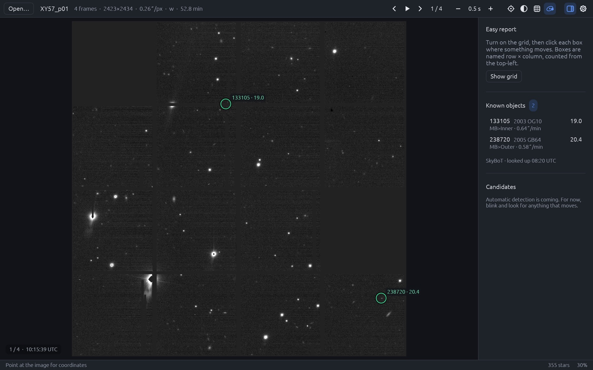
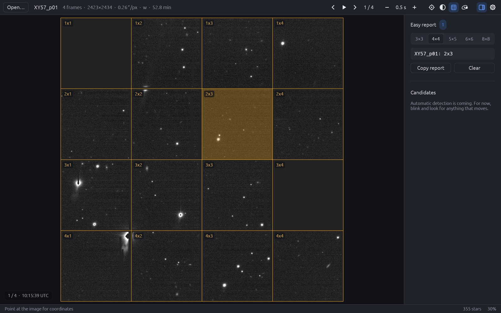

A small, fast, open-source app for asteroid searching. Blink your survey images, spot what moves, check known asteroids and send the report.

Built for students and amateur astronomers in campaigns such as IASC's, where teams blink Pan-STARRS images to discover new asteroids.
Drop in a folder or the .zip you were sent. Frames load in parallel and blink at the speed you choose.
Known asteroids in the field are circled with name, brightness and motion, online via SkyBoT or offline from MPCORB.
Turn on the grid and click each box where something moves. The row × column report is ready to paste for your teacher.
Native code with no web engine inside. Starts instantly and uses almost no CPU while idle.
Runs natively on Apple Silicon and Intel Macs, Windows and Linux. No emulators or Wine needed.
MIT or Apache-2.0. Read the code, check the maths and help improve it.
Pick a grid size, click the boxes where you saw movement, and copy a report like XY57_p01: 2x3. Boxes are counted from the top-left, the same way your team's charts are.

The latest release, built automatically from the source on GitHub.
First launch: right-click OpenCeres.app and choose Open, because the app is not yet notarised by Apple.
Unzip and run OpenCeres.exe. If SmartScreen warns you, choose More info → Run anyway.